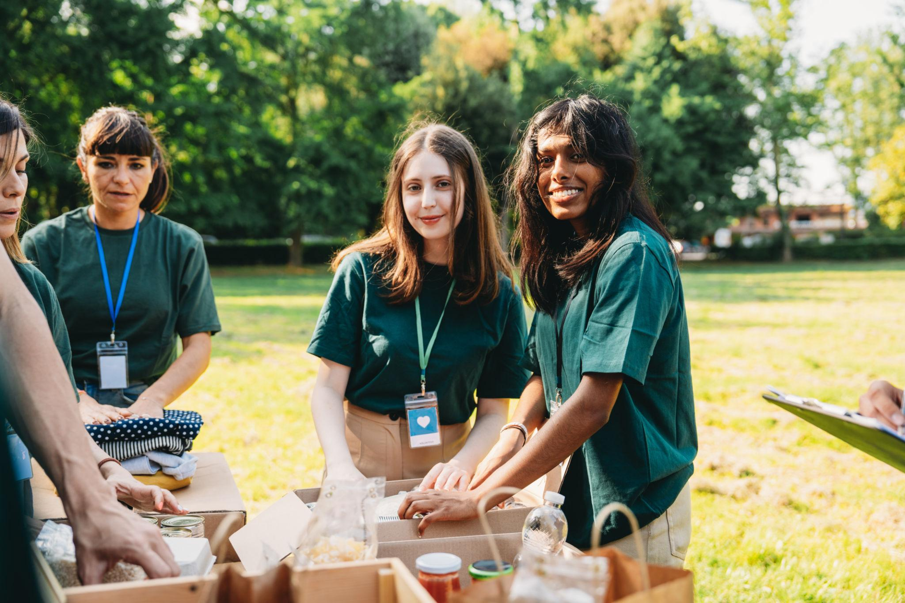

Doações
Alimentos, roupas e contribuições ajudam a manter nossos projetos e atender famílias que precisam de apoio.
Saiba mais →Acreditamos que pequenas ações podem gerar grandes mudanças. Trabalhamos para apoiar pessoas em situação de vulnerabilidade por meio de projetos sociais, doações e voluntariado.

A Nova Chance conecta pessoas que querem ajudar com comunidades que precisam de apoio. Nossos projetos buscam gerar oportunidades, inclusão e melhorar a qualidade de vida das pessoas.
Alimentos, roupas e contribuições ajudam a manter nossos projetos e atender famílias que precisam de apoio.
Saiba mais →Doe seu tempo e suas habilidades participando das nossas ações, campanhas e eventos sociais.
Quero participar →Cada participação contribui para criar oportunidades e fortalecer comunidades por meio da colaboração.
Conheça a Nova Chance →Seja através de uma doação ou do seu tempo como voluntário, sua participação pode fazer diferença.